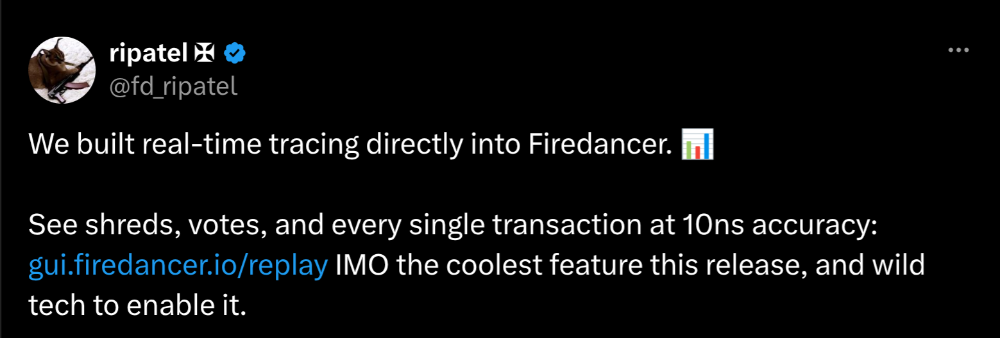
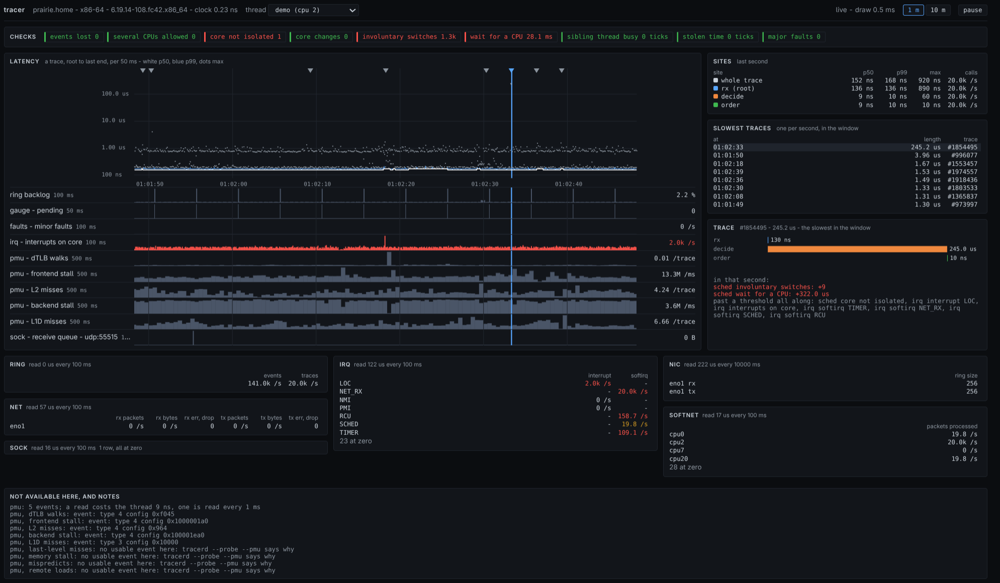

Introduction
A few days ago, a tweet popped up on my timeline:

One of Firedancer’s (a really nice piece of open-source software) main contributors announced that they had built “real-time tracing” directly into the program. The idea and the preview inside the tweet were enough to get me curious and click the link. I was immediately amazed by how rich and well-designed the GUI was, and wished I had a similar tool available for my own engines. I sadly had to get on with my day, but as soon as I got home, I decided to spend some of my free time (and AI tokens) building my own, smaller version of their tracer.
1. What’s tracing?
Thread tracing is about following a thread’s execution to understand what it does, how much time is spent on each step, and collecting additional useful data along the way. It is often mistaken for profiling, but the two are quite different. Profiling generally gives you a statistical overview of where your program spends its time, whereas tracing allows you to follow individual events and reconstruct the execution timeline. It is useful in a wide range of scenarios, such as always-on monitoring (like in Firedancer) or debugging latency artifacts. The major drawback of tracing is its cost. You are facing a trade-off between the granularity and amount of data you extract from the running component and how much slower it becomes once traced. This comes from the additional instructions it must execute, the increased pressure on the memory subsystem and the other various costs associated with extracting and making the data available.
2. Why build my own?
I’ve spent a lot of time designing and developing tracing solutions at work, but never really got the opportunity to work on an always-on tracer. Moreover, while there are many modern tracing tools available online, I tend to avoid using software I haven’t read or don’t have at least a vague idea of how it works. Second, they are usually quite bloated, slow and/or overengineered, either because of poor design decisions or simply because they are intended to cover a very wide range of use cases.
magic-trace, for example, is really
good, but I wouldn’t recommend using it for always-on
tracing for two reasons:
It uses Intel PT under the hood to record control-flow information directly at the CPU level. Depending on the configuration and workload, it can generate a substantial amount of data and consume a lot of memory bandwidth, potentially slowing down the entire chip.
You can only inject your own events using manual PTWRITEs, which is fine for one-off investigations but inconvenient for production integration.
This is how tracer, my simple tracing
tool, came to life. It allows you to trace a single
thread on an x86 or aarch64 Linux host with minimal
overhead and zero runtime dependencies.
Available on GitHub: github.com/5prairie/tracer
3. What data to dump
A tracer event is just 16 bytes and
looks like this:
typedef struct {
uint64_t tsc; /* trace_tsc() when it happened; 0 for a gauge */
uint64_t word; /* kind (4 bits), site (12), value (48) */
} trace_event_t;tsc is simply a snapshot of the
processor’s timestamp counter, which can be read with a
single hardware instruction.
kind can be one of four values:
#define TRACE_KIND_BEGIN (0UL) /* a span opens */
#define TRACE_KIND_END (1UL) /* the span of the same site closes */
#define TRACE_KIND_MARK (2UL) /* an instant */
#define TRACE_KIND_GAUGE (3UL) /* a level: value is the level, tsc is 0 */
#define TRACE_KIND_COUNTER (4UL) /* a hardware counter: site is its index, value its count */site is a unique per-tracepoint
identifier.
value is a free payload. It can carry
any additional information or context you may want to
store for a given site.
The event format is lightweight, both in size and in generation/copy cost. The site is generated at compile time, and reading the reference clock is about as cheap as it gets. On modern platforms, it can take around 4–6 ns, depending on the architecture and clock frequency. Its reciprocal throughput is generally good meaning repeated timestamp reads aren’t necessarily limited by their individual instruction latency. Note that for both target, the instruction used to read the clock is not serializing, so it can introduce some jitter in the precision of measurements due to out-of-order execution. One improvement I haven’t bothered implementing yet would be to shave off some bits from the TSC and use deltas from the trace start instead of storing the full snapshot in every event.
4. How do you dump?
tracer records events by copying them
into a shared-memory region (ideally backed by a single
huge page to reduce TLB pressure and page-walk
overhead).
An event is recorded using the following function:
TRACE_INLINE void trace_emit( uint64_t tsc, uint64_t word ) {
trace_writer_t * writer = &trace_writer; /* get the thread-local writer */
uint64_t cursor = writer->cursor; /* read the current head */
trace_event_t * event = &writer->event[ cursor & writer->mask ]; /* load the event */
event->tsc = tsc; /* copy the tsc */
event->word = word; /* copy the data */
writer->cursor = cursor + 1UL; /* update the writer's head */
__atomic_store_n( writer->cursor_shared, cursor + 1UL, __ATOMIC_RELEASE );/* store the published head */
}It’s very simple: only the data we actually need is being moved around. One of the main costs to consider is cache coherency. If other CPUs hold shared copies of a cache line that the writer needs to modify, the coherence protocol must invalidate those copies before the writer can obtain exclusive ownership. This introduces additional latency, which can become particularly expensive when the cache line is shared across sockets. The actual cost depends heavily on the CPU architecture, topology and contention. In this case, the shared publication counter is particularly interesting, as the consumer continuously reads it while the producer updates it. This can generate a fair amount of cache-coherency traffic. It is therefore essential to keep the number of concurrent readers as low as possible. One low-hanging fruit would be to batch updates and publish the new head less frequently, reducing the cache-coherency traffic over the CPU interconnect.
5. How do you collect?
tracer comes with a tracerd
program which continuously collects new events and
telemetry data.
6. How do you visualize?
A simple HTTP server and a Web GUI are embedded into
tracerd.

Conclusion
Credits
Firedancer’s Web GUI and tracing engine, which heavily inspired this project: